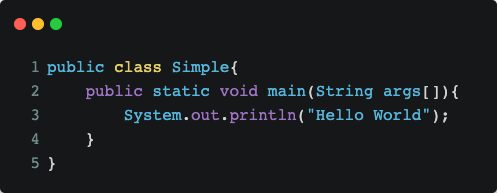

Introduction to Java
February 27, 2022
What is Java ?
Java is an object-oriented, class-based computer programming language commonly used for highly independent systems. It is used to target programmers who "write one, run everywhere". This means that the compiled Java code can be run on all platforms supporting Java without needing to be recompiled. Java applications that have been compiled into bytecode can run on any Java virtual machine. Java is first released by Sun Microsystems in 1995. It has evolved from humble beginnings to power a large share of today digital world, by providing the reliable platform upon which many services and applications are built.
Java example

Why use Java ?
- Java works on different platforms (Windows, Mac, Linux, Raspberry Pi, etc.)
- It is one of the most popular programming language in the world.
- It is easy to learn and simple to use.
- It is open-source and free.
- It is secure, fast and powerful.
- It has a huge community support (tens of millions of developers)
- Java is an object oriented language which gives a clear structure to programs and allows code to be reused, lowering development costs.
- As Java is close to C++ and C#, it makes it easy for programmers to switch to Java or vice versa.
Java characteristics
1. Object Oriented
Object-oriented means that we organize software as a combination of many different types of objects that closely incorporate both their data and their behaviour.
Some basic concepts of object-oriented are: Object, Class, Inheritance, Polymorphism, Abstraction, Encapsulation, etc.
2. Platform Independence
A platform is the hardware or software environment in which a program runs. There are two types of platform: a software-based and a hardware-based. Java provides a software-based platform.
The Java platform differs from many other platforms in that it runs on top of other hardware-based platforms. It has two components: Runtime environment and API (Application Programming Interface)
Java code can run on many platforms such as Windows, Linux, Sun Solaris, Mac/OS, … Java code is compiled by Compiler and converted into Bytecode. This bytecode is a platform independent code because it can run on many different platforms.
3. Security
Java is considered to be secured because:
There are no explicit pointers.
The program runs inside virtual device boxes.
Classloader:Adds protection by separately distinguishing packages for classes of the local file system from which they are imported from files from network sources.
Bytecode Vertifier:Checks the code for invalid pieces of code that can gain unauthorized access to objects.
Security Manager:Decides which resources a class can access, such as reading and writing to the local disk.
4. Distributed
We can create distributed applications in Java. RMI and EJB are used to create these applications. We can access files by calling methods from any device on the internet.
5. Multi-thread
A thread is like a separate program, executing concurrently. We can write Java programs that handle multiple tasks at the same time by defining multiple threads. The main advantage of multi-threading is that it shares the same memory.
Threads are important for multi-media, web apps, etc.
1. Object Oriented
Object-oriented means that we organize software as a combination of many different types of objects that closely incorporate both their data and their behaviour. Some basic concepts of object-oriented are: Object, Class, Inheritance, Polymorphism, Abstraction, Encapsulation, etc.
2. Platform Independence
A platform is the hardware or software environment in which a program runs. There are two types of platform: a software-based and a hardware-based. Java provides a software-based platform. The Java platform differs from many other platforms in that it runs on top of other hardware-based platforms. It has two components: Runtime environment and API (Application Programming Interface)
Java code can run on many platforms such as Windows, Linux, Sun Solaris, Mac/OS, … Java code is compiled by Compiler and converted into Bytecode. This bytecode is a platform independent code because it can run on many different platforms.
3. Security
Java is considered to be secured because:
There are no explicit pointers.
The program runs inside virtual device boxes.
Classloader:Adds protection by separately distinguishing packages for classes of the local file system from which they are imported from files from network sources.
Bytecode Vertifier:Checks the code for invalid pieces of code that can gain unauthorized access to objects.
Security Manager:Decides which resources a class can access, such as reading and writing to the local disk.
4. Distributed
We can create distributed applications in Java. RMI and EJB are used to create these applications. We can access files by calling methods from any device on the internet.
5. Multi-thread
A thread is like a separate program, executing concurrently. We can write Java programs that handle multiple tasks at the same time by defining multiple threads. The main advantage of multi-threading is that it shares the same memory. Threads are important for multi-media, web apps, etc.